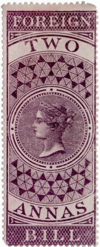
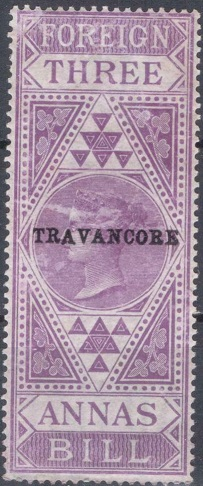
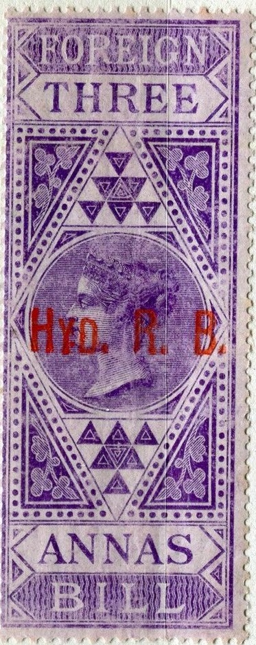
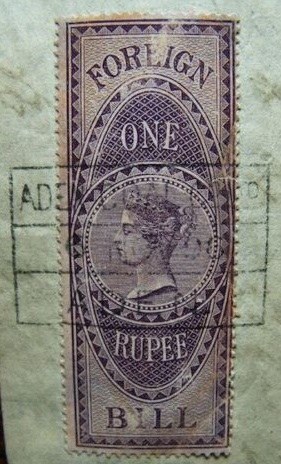
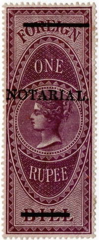
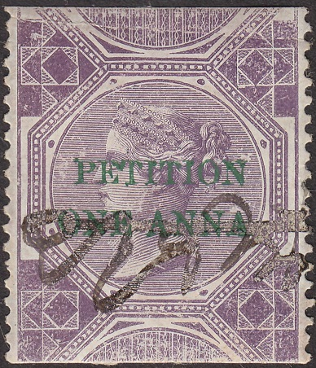
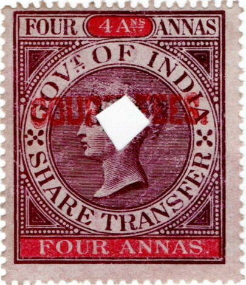

INDIA FISCAL STAMPS, Foreign Bill, High Court,
Notarial, Petition, Share Transfer
Return To Catalogue -
India - India
fiscal stamps, overview
Note: on my website many of the
pictures can not be seen! They are of course present in the
catalogue;
contact me if you want to purchase it.
1860 Foreign Bill embossed stamps:


1860: "FOREIGN BILL" on 4 a red embossed seal. It
exists in the values 4 a, 1 R and 4 R all in red with a variety
of dates printed in the 3 corners. Also a surcharged stamp
"EIGHT ANNAS" on 4 a issued in 1901 to 1904. The
overprint is supposed to be in green (with green borders around
the stamp).
FOUR ANNAS red and green
ONE RUPEE red and green
FOUR RUPEES red and green
In 1901 some surcharges were done
"FOUR ANNAS 4 ANS" on 1 R red and green
"EIGHT ANNAS" on 1 R red and green
3 R on 4 R red and green
1861 Tall sized stamps (23 x 60 mm) with Queen
Victoria, inscription "FOREIGN BILL", various frames,
all in lilac color

Foreign Bill, 12 a and 3 R
2 a lilac
3 a lilac
4 a lilac
6 a lilac
8 a lilac
12 a lilac
1 R lilac
1 R 8 a lilac
2 R lilac
3 R lilac
4 R lilac
6 R lilac
8 R lilac
12 R lilac
18 R lilac
24 R lilac
Surcharged stamps: 4 a on 4 R, 3 R on 4 R
Surcharged stamps 1898-1904:
"ANNAS" on 2 R lilac (2 a on 2 R, 1898)
"TWO ANNAS" and bars on 18 R lilac
"TWO" on 24 R lilac
"ANNAS" on 4 R lilac (4 a on 4 R)
"ANNAS" on 6 R lilac (6 a on 6 R)
12 a on 2 R lilac
"ANNAS" on 12 R lilac (12 a on 12 R)
"THREE" on 8 R lilac (3 R on 8 R)
A similar stamp in the above design (Foreign
Bill) in the value 4 R exists with overprint "TELEGRAPH 1
ANNA" to be used for telegraphic purposes.
"TELEGRAPH 1 ANNA" on 4 R, here with
"SPECIMEN" overprint.


Foreign Bill stamp of 6 a with "MYSORE" overprint to be
used in the state of Mysore. And a 3 a with
"TRAVANCORE" overprint. Red and black
"HYD.R.B." for Hyderabad.
With "HUNDI" overprint, unlisted in Forbin or Barefoot.
Hundi is some kind of money transfer system in India.

Cancel with "ADEN COAL Co LTD ADEN" on top, date in the
center and "ADEN" below.
High Court:
First issued in 1868, tall sized stamps with
inscription "HIGH COURT".
1868 issue: 25 values ranging from 1 a to 100 R were issued, all
in lilac and red color.
"COURT FEES." overprint in red and black bars on
"HIGH COURT"
1869: "High Court." (Calcutta issue); The following
values in lilac color are listed in the Forbin guide: 1 a, 2 a, 3
a, 6 a, 1 R, 2 R, 3 R, 4 R, 7 R and 10 R. Futhermore exist 1 a
lilac on blue, 2 a violet, 3 a brown, 4 a green, 8 a blue, 12 a
red, 3 R brown, 6 R green, 7 R orange, 9 R grey and 20 R olive.
I've also seen 4 a lilac (see image above) and 8 a lilac.
High Court Service:
Special Adhesive stamps, overprinted "High
Court." horizontally and "Service." vertically
The values 6 a lilac, 8 a blue and 1 R brown exist according to
the Forbin Guide (the Forbin Guide says the authenthicity is not
proven).
High Court Notarial:
"HIGH COURT NOTARIAL" on 1 R lilac Foreign Bill stamp.
This stamp was issued in 1879, only this value was issued.
Notarial:
1 R red and green Foreign Bill stamp of 1860 with
"NOTARIAL" overprint, issued in Bombay. Two different
sizes exist of this overprint.

Foreign Bill stamp overprinted "NOTARIAL" and two bars
on 1 R lilac "FOREIGN" and "BILL" (Calcutta
issue). And "NOTARIAL" without bars (Bombay issue, 2
different sizes exist in a black color and one more size in red
color).
.
"NOTARIAL" on 1R lilac Foreign Bill stamp (Bombay
issues); 4 different sizes of the overprint exist (reading
upwards or downwards)
1902, overprint "NOTARIAL" on 1 R Foreign Bill stamp of
King Edward VII. A red horizontal overprint should also exist
according to the Forbin Guide.
Petition:

1867: Foreign bill stamps of 1861, top and bottom cut
off, overprinted "PETITION" in green. In 1870 this
particular stamp was futher surcharged with a red "COURT
FEES" to be used as court fee fiscal.
1867 With green "PETITION" overprint:
"ONE ANNA" on 4 R violet (horizontal or vertical overprint)
1 a on 8 R violet (overprint 13 or 16 mm)
8 a violet (overprint 13 or 16 mm)
1 R violet (overprint 13 or 16 mm)
2 R violet
1870 With further "COURT FEES." overprint in red
2 R violet
Some other (rare) local overprints seem to exist.
Share Transfer (1863):
Share Transfer 4 a, issued in 1863. The values 1 a, 2 a, 3 a, 4
a, 8 a, 12 a, 1 R, 1.4 R, 2.8 R, 3.12 R, 5 R, 6.4 R, 7.8 R, 10 R
and 20 R exist. They are all in the same colors (lilac and red).
The Forbin guide says that some of these stamps are printed in
water-soluble colors.
1905 surcharge "TEN TEN 10" on 20 R (very rare). There
is a chop with date 1905 elsewhere on this document.

With red "COURT FEES." overprint. The following values
exist: 1 a, 2 a, 3 a, 4 a, 8 a, 12 a, 1 R, 5 R, 10 R, and 20 R.
The 1 a should also exist overprinted in black(?), but I have
never seen it.
1892 Share Transfer provisional issue
1892 "SHARE TRANSFER" overprint on special adhesive
fiscals; the values 2 a lilac, 3 a brown and 6 a brown were
issued.
Copyright by Evert Klaseboer
{kind=link}
{kind=link}